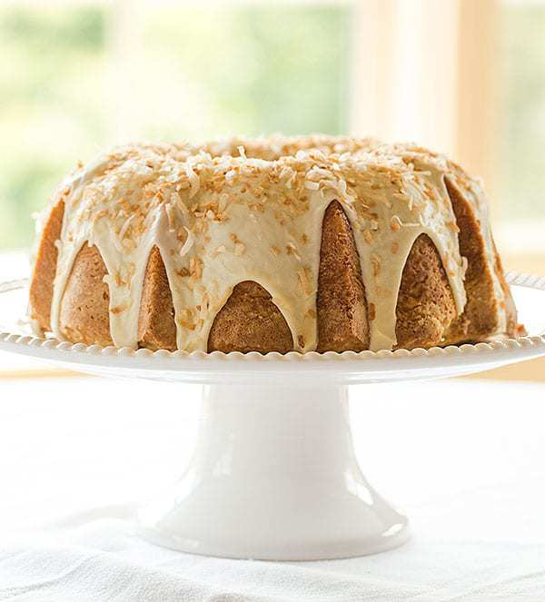
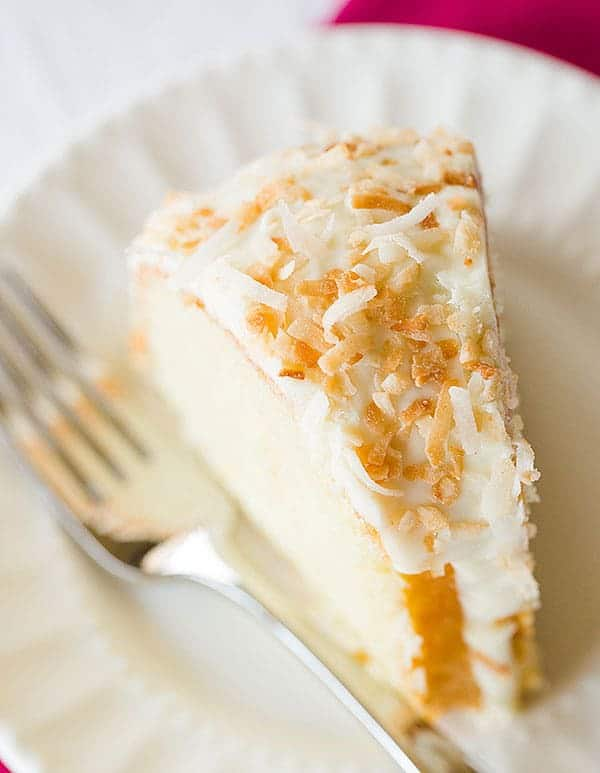

Coconut Bundt Cake with White Chocolate-Coconut Glaze
Last week flew by and before I knew it, it was time to plan the menu for Sunday dinner. Sundays have been a perfect opportunity for me to experiment with new dessert recipes, especially those that serve tons of people, since we have help
polishing it all off and don’t have it sitting around the house, tempting us for days.

I love anything with coconut during the spring and summertime, and Bundt cakes are not only easy but they’re pretty and are perfect for serving a crowd. When
I started flipping through a couple of my newer cookbooks and saw a recipe for a coconut Bundt cake, dessert was immediately decided.
This cake comes pretty darn close to a coconut pound cake, as there is quite a bit of butter,
sugar and eggs that help to create a wonderfully rich and moist cake. The coconut flavor is derived from a large amount of coconut milk in both the cake and glaze, as well as a healthy dose of coconut extract. I also added toasted
shredded coconut on top of the glaze because, well, I feel like any type of coconut dessert needs to be topped with toasted coconut.
A couple of years ago, a coconut cake would have never ranked high on my list of cake options,
but between the coconut cupcakes I made last year and this cake, I am a total coconut convert.
Plus, after everyone went home yesterday, we were only left with two small pieces of cake. Win-win!


what is Coconut Bundt Cake
The Bundt cake derives in part from a European brioche-like cake called Gugelhupf. In the north of Germany Gugelhupf is traditionally known as Bundkuchen, a name formed by joining the two words Bund and Kuchen (cake)
Opinions differ
as to the significance of the word Bund. One possibility is that it means "bunch" or "bundle", and refers to the way the dough is bundled around the tubed center of the pan. In Dutch, the cake is called "tulband," which is Dutch for
'turban.' The pronunciation of the second part of this word is very similar to that of 'bundt.' Another source suggests that it describes the banded appearance given to the cake by the fluted sides of the pan, similar to a tied sheaf
or bundle of wheat.[2] Some authors have suggested that Bund instead refers to a group of people, and that Bundkuchen is so called because of its suitability for parties and gatherings
Gradually people began to improve to help
the cake not be boring, people added other ingredients to the cake to get the coconut bundt cake like today.